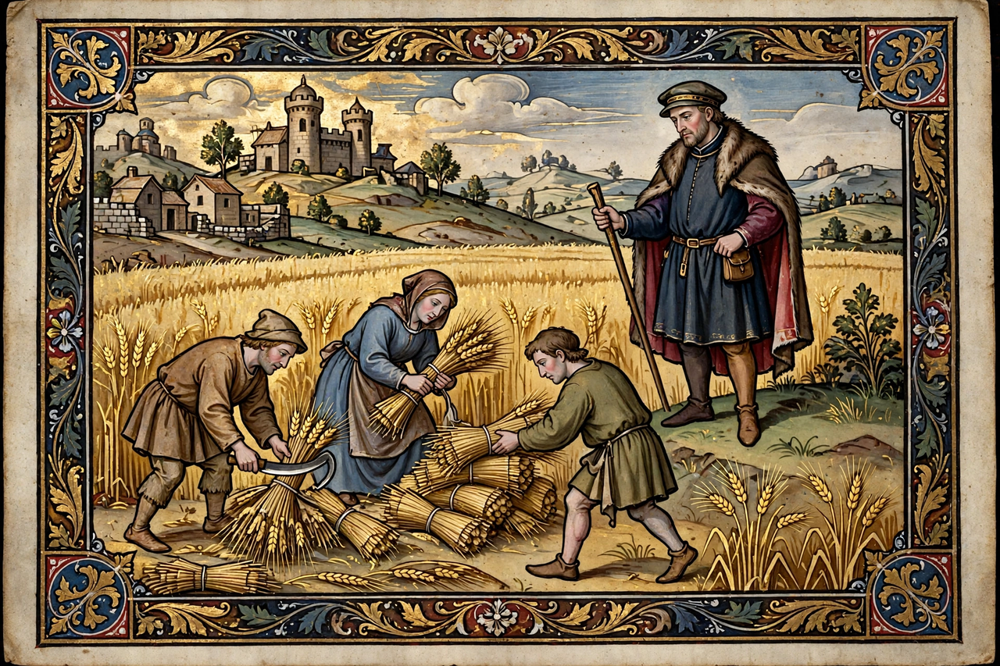

Serfdom

Serfdom was the status of many peasants under feudalism, specifically relating to manorialism, in which peasants were legally bound to the land they worked and to the will of their lord. A serf differed from a slave in that he could not be bought or sold individually — though he could be sold with the land — and held customary rights to his holding, his crops and his family, while owing labour services and dues and lacking freedom of movement and marriage.
Origins and obligations
Serfdom developed in late antiquity and the early Middle Ages as free peasants commended themselves and their land to lords in return for protection. The unfree tenant (in England the villein, from villanus) could not leave the manor, take holy orders or marry outside it without the lord's licence and payment, and was subject to the manorial court. In return he held land heritably by custom and could not lawfully be evicted or have his dues raised arbitrarily — the "custom of the manor" was a real, if unequal, protection.
Decline and persistence
In western Europe serfdom declined from the 12th century as labour services were commuted for money, and the labour shortages after the Black Death accelerated its decay; peasant revolts such as the English Rising of 1381 and the German Peasants' War of 1524–25 marked its violent end in places. East of the Elbe, by contrast, serfdom intensified as landlords built export grain estates. In Russia, where serfdom was codified in 1649, it survived until the Emancipation of 1861 freed some 23 million serfs; in the Habsburg lands it ended in 1848, and in France seigneurial dues fell in 1789.
See also: Manorialism, Feudalism, Black Death.